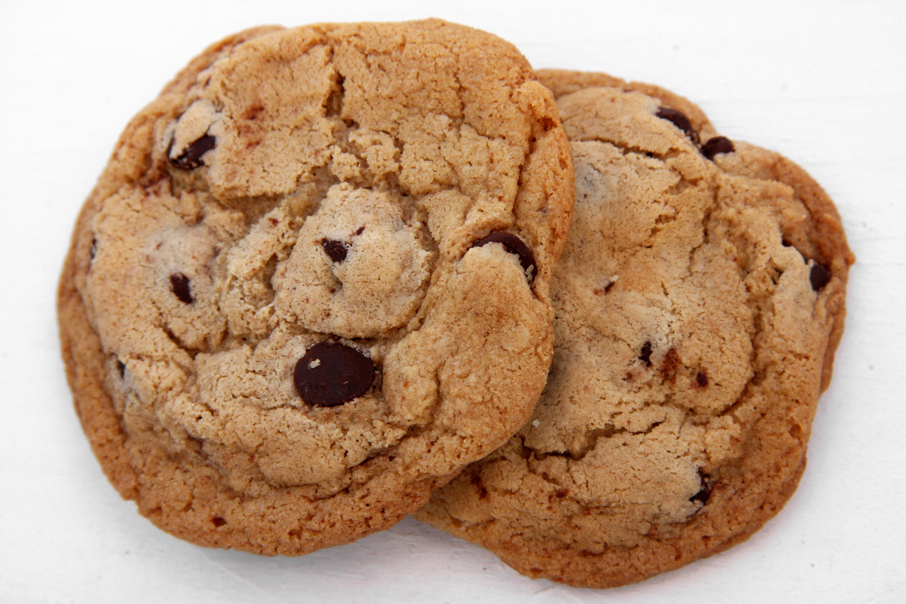

Cookies

Description
You may have memorized the foolproof gem on the back of the Toll House bag, given to the world by Ruth Graves Wakefield in the 1930s. But this may become your new favorite chocolate chip cookie recipe. It’s a little more complicated, and you’ll have to plan ahead: After assembling the dough, you must chill it for at least 24 hours before baking it, and preferably up to 36. This allows the dry ingredients time to soak up the wet ones, which results in a firmer dough. It leads to a marvelously chewy, chocolate-rich cookie. Don’t skimp on good chocolate, and the sea salt is not an option — it’s the beacon at the top of this gorgeous treat.
Ingredients
- Flour
- Eggs
- Chocolate chips
- Sugar
- Vanilla extract
Steps
- Sift flours, baking soda, baking powder and salt into a bowl. Set aside.
- Using a mixer fitted with paddle attachment, cream butter and sugars together until very light, about 5 minutes. Add eggs, one at a time, mixing well after each addition.
- When ready to bake, preheat oven to 350 degrees. Line a baking sheet with parchment paper or a nonstick baking mat. Set aside.
- Scoop 6 3½-ounce mounds of dough (the size of generous golf balls) onto baking sheet, making sure to turn horizontally any chocolate pieces that are poking up; it will make for a more attractive cookie.